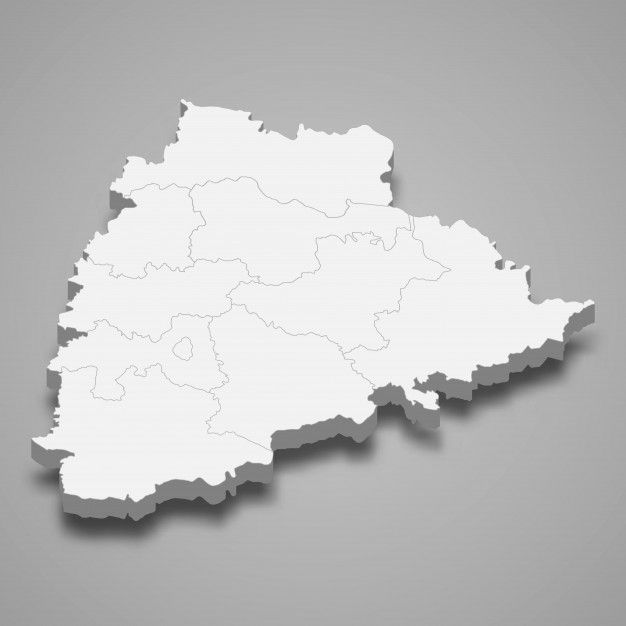

Telangana

- History: Evolved from the princely state of Hyderabad, merged into Andhra Pradesh, and became a separate state after a long movement.
- Capital: Hyderabad, a major cultural and economic center.
- Culture: A blend of Deccan, Telugu, and other influences, known as the "South of North & North of South," with rich textile arts and dance.
- Cuisine: Features spiced pancakes (Sarva Pindi), crunchy snacks (Sakinalu), and unique flavors.
- Festivals: Celebrates major Hindu festivals like Bonalu (honoring Goddess Mahakali) and Dussehra (Vijayadashami).
- Economy: Historically a cotton producer, it's now a hub for textiles and technology, with ongoing development.